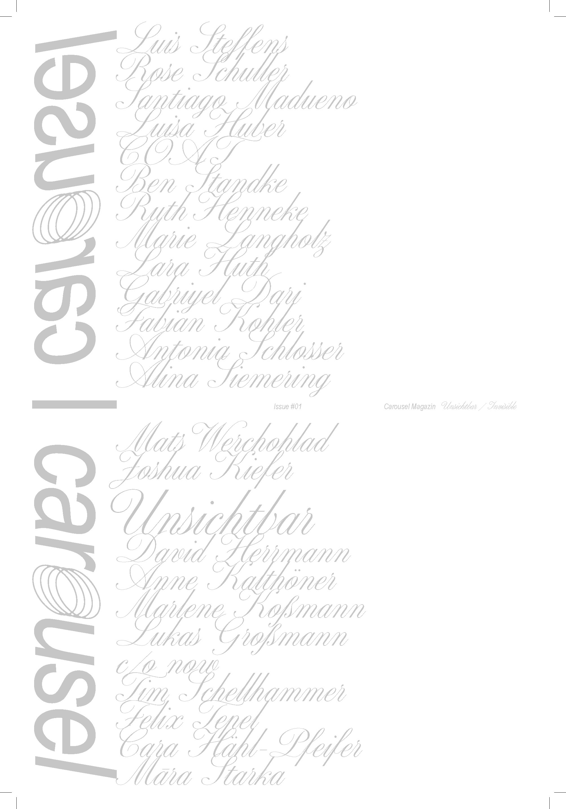
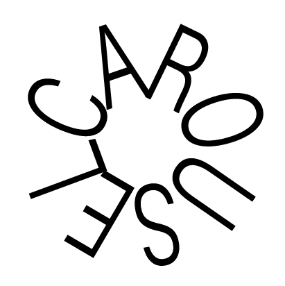

Das Carousel Magazin versteht sich als Open-Source-Plattform für den interdisziplinären Diskurs zu bauverwandten Themen. Die jährlich erscheinenden Ausgaben widmen sich jeweils einem spezifischen Themenschwerpunkt und verfolgen das Ziel, diesen aus unterschiedlichen fachlichen Perspektiven zu beleuchten und zur Diskussion zu stellen.
Carousel Magazine defines itself as an open-source platform for interdisciplinary discourse on topics related to the built environment. Each annual issue is dedicated to a specific theme, aiming to explore it from a variety of professional perspectives and to invite discussion.
Team:
Christine Anschütz
Maximilian Atta
Hannah Dempwolff
Mieke Engelhardt
Nicolas Holzapfel
Konrad Rinke
Johanna Roth
Laura Schieferdecker
Simon Schlereth
Eva Schütze
Amelie Steffen
Johanna Ponstein
Jonas Wald
Leonhard Zumbusch
Photo: Tillmann Gebauer
Liebe Leserinnen und Leser,
als neu gegründetes studentisches Magazin aus dem Bereich Architektur an der TU München freuen wir uns sehr, die erste Ausgabe des Carousel Magazins herauszugeben. Als Auftakt einer hoffentlich lange bestehenden Magazinreihe haben wir für diese erste Ausgabe das Thema „Unsichtbar" gewählt - passend zu unserem initialen Anliegen, jungen Stimmen im architektonischen Diskurs eine Plattform zu bieten und damit die Aufmerksamkeit ein wenig zu verschieben. Den Autor*innen soll nicht nur durch ihre Veröffentlichungen Sichtbarkeit gegeben werden, sondern darüber hinaus auch die Möglichkeit, Themen in den Fokus zu rücken, die oft im Verborgenen bleiben. Denn wir empfinden, dass in einer komplexen Weltlage und einem sich immer rasanter wandelnden architektonischen Kontext viele Fragen und Perspektiven schnell ins Abseits geraten.
In diesem Sinne glauben wir, dass alle Autor*innen einen wertvollen Beitrag zum aktuellen Architekturdiskurs leisten. Mit über 50 Einreichungen nach unserem Open Call hatten wir die schwierige Aufgabe, eine Auswahl zu treffen, die möglichst divers die eingereichten Themen abbildet und gleichzeitig einen Dialog untereinander ermöglicht. Lassen sich bei oberflächlicher Betrachtung ganz unterschiedliche Themenfelder identifizieren, so verbindet doch alle Beobachtungen immer wieder, dass ihnen unsichtbare Strukturen und Systeme innewohnen, die in unseren Augen großen Einfluss auf die aktuelle Zeit haben.
Die Beiträge beschäftigen sich mit alltäglichen Details, die unseren gebauten Raum prägen, sowie mit großen städtebaulichen Gesten, deren bestimmende Bedingungen oft unbekannt bleiben. Sie beschäftigen sich reflektierend mit der architektonischen Ausbildung und Praxis, den darin versteckten, sich selbst reproduzierenden Mechanismen und mit den Prozessen der Immobilienwirtschaft, deren Logik oft eher ökonomischen statt ökologischen und sozialen Interessen folgt. Verhandelt wird die Frage nach der Entstehung von Gleichförmigkeit im Bauen ebenso wie die unterschätzte Individualität in der großen Masse von Bauten der Nachkriegsjahre. Sichtbar wird auch die oft übersehene Bedeutung der Raumpraxis marginalisierter Gruppen sowie der gesellschaftliche Einfluss sich selbst verstärkender, partizipativer Phänomene.
In allen Beiträgen ist die Unsichtbarkeit zu spüren, manchmal ganz offensichtlich und dann wieder im kleinen Detail – unabhängig davon, ob wir sie unsichtbar nennen oder unverständlich, verschleiert, versteckt, unterschätzt, übersehen oder vergessen.
Wir hoffen, dass die Beiträge einige dieser vorangestellten Adjektive verschwinden lassen und mit etwas mehr Sichtbarkeit über diese wichtigen Themen gesprochen werden kann.
Viel Vergnügen beim Lesen,
das Carousel-Magazin-Redaktionsteam
Impressum
Anbieter
Initiative CAROUSEL Magazin
Arcistraße 21
80333 Munich,
Germany
Kontakt
E-Mail: mail@carouselmagazin.com
Inhaltlich verantwortliche Person gem. § 18 Abs. 2 MStV
Laura Schieferdecker
Arcisstraße 21
80333 München
Haftungsausschluss
Wir sind für die Inhalte unserer Internetseiten nach den Maßgaben der allgemeinen Gesetzen verantwortlich. Alle Inhalte werden mit der gebotenen Sorgfalt und nach bestem Wissen erstellt. Soweit wir auf unseren Internetseiten mittels Hyperlink auf Internetseiten Dritter verweisen, können wir keine Gewähr für die fortwährende Aktualität, Richtigkeit und Vollständigkeit der verlinkten Inhalte übernehmen, da diese Inhalte außerhalb unseres Verantwortungsbereichs liegen und wir auf die zukünftige Gestaltung keinen Einfluss haben. Sollten aus Ihrer Sicht Inhalte gegen geltendes Recht verstoßen oder unangemessen sein, teilen Sie uns dies bitte mit.
Die rechtlichen Hinweise auf dieser Seite sowie alle Fragen und Streitigkeiten im Zusammenhang mit der Gestaltung dieser Internetseite unterliegen dem Recht der Bundesrepublik Deutschland.
Datenschutzhinweis
Unsere Datenschutzerklärung finden Sie unter: https://app.dieter-datenschutz.de/api/livedoc/cmkn1pbzc0041ms0t0vah0189
Urheberrechtshinweis
Die auf unserer Internetseite vorhandenen Texte, Bilder, Fotos, Videos oder Grafiken unterliegen in der Regel dem Schutz des Urheberrechts. Jede unberechtigte Verwendung (insbesondere die Vervielfältigung, Bearbeitung oder Verbreitung) dieser urheberrechtsgeschützten Inhalte ist daher untersagt. Wenn Sie beabsichtigen, diese Inhalte oder Teile davon zu verwenden, kontaktieren Sie uns bitte im Voraus unter den oben stehenden Angaben. Soweit wir nicht selbst Inhaber der benötigten urheberrechtlichen Nutzungsrechte sein sollten, bemühen wir uns, einen Kontakt zum Berechtigten zu vermitteln.
Social-Media-Profile
Dieses Impressum gilt auch für folgende Social-Media-Profile:
Instagram: https://www.instagram.com/carousel.magazin/
Gestaltung Website
Nicolas Holzapfel & Johanna Ponstein